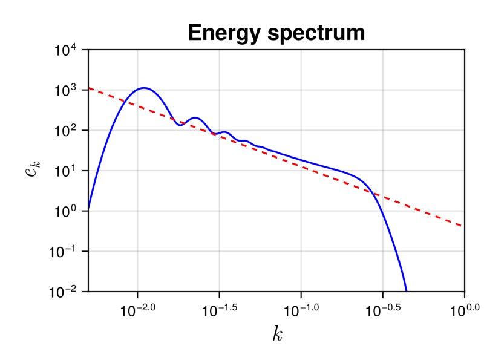

Smoluchowskisolver
The Smoluchowski equation is a standard model of statistical physics. It describes coagulation processes such as droplets in clouds, blood clots, meteorite formation from stellar dust, and so on.
Description
In this case we use $k$ for the particle mass and $n_{k}$ is the particle density. The collision integral is
\[St_{k} = \frac{1}{2} \int\limits_0^k ~ K(k-p,p) ~ n(k-p,t) ~ n(p,t) ~ \mathrm{d}p -\int\limits_0^\infty ~ K(k,p) ~ n(k,t) ~ n(p,t) ~ \mathrm{d}p.\]
The coagulation kernel $K(k,p)$ describes the rate at which particles of mass $k$ coagulate with particles of mass $p$. The constant, additive, and multiplicative kernels are defined as
\[K(k,p) = 1, ~~~~ K(k,p) = k + p, ~~~~ K(k,p) = k p\]
respectively. These kernels are defined in src/physical_systems/Smoluchowski/basics.jl. Using other kernels is easy since $K$ is passed as an element of the Smoluchowski structure. For more information about the Smoluchowski equation, you can refer to wikipedia.
Note that in the general case, there is only $1$ integral to perform for each element of in mass space. Solving this equation will then require $M^2$ operation per time-step, where $M$ is the number of discretization points of the mass space. It makes the simulation relatively cheap.
This wave kinetic equation conserves the total mass $H$
\[H = \int k n_{\bf k} d{\bf k}.\]
Solver
Numerical method
The computation of the collision integral $St_{k}$ is straightforward. We use logarithmic grid wave_spectrum.
The different options are described in the Smoluchowski documentation.
Using the Smoluchowski solver
As all the other WavKinS solvers, for Smoluchowski we need to create a Smoluchowski structure containing all the fields, working space, diagnostics, etc.
using WavKinS
# Create a waveaction structure containing the basic grid
M = 1024 # set the number of nodes
kmin = 5e-3 # minimal wave number
kmax = 1e0 # maximal wave number
Nk = wave_spectrum(kmin, kmax, M)
# Creating a NLS3D run structure with default parameters and multiplicative kernel.
Run = Smoluchowski(Nk; K=WavKinS.K_Smoluchowski_multiplicative)Note that the constructor allows to define the coagulation kernel in the structure so it is easy to use this solver to study many different physical systems. For example, you can investigate systems with kernels of the form $K(k,p) = (k p)^{1/3}$ by using
function K_spec(k,p)
return (k*p)^(1/3)
end
Run = Smoluchowski(Nk; K=K_spec)Diagnostics
This solver has the standard diagnostics.
For consistency with other systems, we fix the "wave frequency" to the particle mass, i.e. $\omega_{k} = k$. In that way, you can use basic diagnostics as for other solvers, but with a different meaning. For example, the "energy" energy is the total mass of particles and the "energy flux" energy_flux! is the mass flux.
Testing convergence of the collisional integral
WavKinS provide a simple test of the numerical convergence of the computation of the collisional integral. The testing script is located in /run/tests/physical_systems/tests_Smoluchowski.jl.
Theoretically, the collisional integral should conserve the mass, which means that
\[\int_0^{k_{\rm max}} St_k k dk=0.\]
The following numerical test evaluates those integrals and check the convergence to $0$.
using WavKinS
function nk_test(kk)
nk = kk^2 * exp(-kk / 50.0) / 250000
return nk
end
println("---------------------------------------------------------------------")
println("Testing collisional integral")
println("")
for M ∈ 2 .^ (4:9)
kmin = 5e-3
kmax = 5e+3
Nk = wave_spectrum(kmin,kmax,M);
Run = Smoluchowski(Nk; K=WavKinS.K_Smoluchowski_one, interp_scheeme=WavKinS.lin_interp);
kk = Nk.kk
λ = Nk.λ
@. Nk.nk = nk_test.(kk);
WavKinS.St_k!(Run)
Flux = wave_spectrum(kmin,kmax,M)
@. Flux.nk = Run.Sk.nk .* Run.ω.(kk);
FluxNumH = integrate(Flux)
Ene = energy(Run)
println("M in k= ", M, ", Integral flux num: dH/H=", FluxNumH / Ene)
end
println("")
println("---------------------------------------------------------------------")The output of this test is
---------------------------------------------------------------------
Testing collisional integral
M in k= 16, Integral flux num: dH/H=0.2848719543347318
M in k= 32, Integral flux num: dH/H=0.04709845613146857
M in k= 64, Integral flux num: dH/H=0.015286090880996035
M in k= 128, Integral flux num: dH/H=0.003651780879324013
M in k= 256, Integral flux num: dH/H=0.0009964865076014901
M in k= 512, Integral flux num: dH/H=0.0002502083115315172
---------------------------------------------------------------------The solver conserves well the waveaction and errors on energy conservation roughly decreases as $M^{-2}$.
Theoretical predictions
For kernel of the form $K(k,p) = a (kp)^{\xi/2}$, the wave turbulence theory provides analytical prediction for out-of-equilibrium steady states obtained with forcing and dissipation, associated to a direct cascade of mass. The corresponding theoretical prediction are (see Connaughton et al., Phys. Rev. E 69, 061114 (2004) ):
\[n_k=C_{KZ}^P |P_0|^{1/2}k^{-(3+\xi)/2}\]
where $P_0$ is mass flux, and the superscript $P$ denotes the direct mass cascade. The theory also predicts the values of the dimensionless constant
\[C_{KZ}^P=\frac{1}{\sqrt{2 \pi a}}.\]
Running the Smoluchowski solver
WavKinS provides a ready to use script to obtain out-of-equilibrium steady states of the WKE. The script is similar to the one presented in the tutorial and can be found in /run/simple/RunSimpleEvolution_Smoluchowski.jl. Running the script will generate the following plot exhibiting the steady state direct mass cascade.
 The dashed line is the theoretical prediction, with no adjustable parameters. The gelation process (see Ball et al., Phys. Rev. E 84, 011111 (2011) ), corresponding to a non-local transfer of small mass to large mass, explains the spectral bump at large mass.
The simulation took 39.1 seconds on a 2.30 GHz 8-Core 11th Gen Intel(R) Core(TM) i7-11800H, using 8 cores.
List of structures and methods for Smoluchowski solver
WavKinS.Smoluchowski — TypeSmoluchowskiSimulation structure for Smoluchowski. It contains
name::String #name of the simulation type
Nk_arguments::Int # Number of arguments of ``n_k``. 1: (fully symetric) , 2: (cylindrical average in 3D or mirror symmetric in 2D), 3: Only mirror symmetric in 3D
ω # Particle size
K # Kernel
Nk::wave_spectrum #wave action
Sk::wave_spectrum #collisional integral
F1::wave_spectrum #working field
FSt::Vector{wave_spectrum} #Array of working fields for multithreading
partition::Vector{UnitRange{Int64}} #partition for multithreading
# Type of interpolation and time stepping scheemes
interp_scheeme::Interp_Scheeme
time_stepping::Time_Stepping
# Outputs and diagnostics
diags::diagnostic_container
t::Float64 #current time
dimension::Int # physical dimension of the system (or of the isotropic sector)
dΩ::Float64 # surface of the unit sphere (or of the isotropic sector)
FD::force_dissipation # Contains all the terms about force and dissipation.WavKinS.Smoluchowski — MethodSmoluchowski(Nk::wave_spectrum; K=K_Smoluchowski_one, interp_scheeme=lin_interp,time_stepping_scheeme=RK2_stepConstructor of a Smoluchowski structure. Optionally we set interpolation and time-stepping scheemes:
interp_scheeme:lin_interp(default),powexp_interp,powGauss_interp,BS_interptime_stepping_scheeme:Euler_step,RK2_step(default),RK4_step
The optional parameter K is the coagulation kernel.